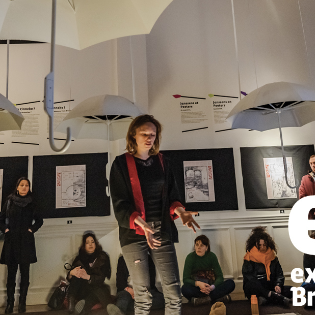
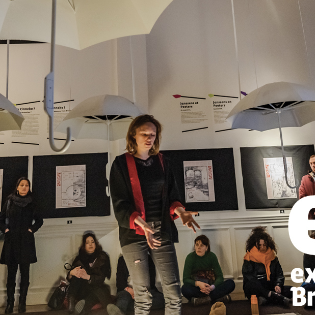

Interview
Quelle est le nom et l'activité ou les activités principales de la société?
> MyVision360, agence d’audiovisuel
Combien de gens sont employés?
> Une dizaine de personnes
Comment sont-ils organisés, est-ce que il y a un boss qui donne des directives? Ou tout le monde participe?
> Tout le monde travaille et chacun est, a priori, au même stade d’égalité.
C'est quoi la fonction que tu as occupé?
> Web designer
Quelles sont les tâches que tu accomplissais?
> Je réalisais des sites internet, je donnais un nouvel aspect à des anciens sites, je créais des logos, je travaillais de nouveaux design de cartes de visite et flyers.
Quel est ton parcours pour devenir développeur?
> J’ai suivi deux formations, une en web développement à MolenGeek et une seconde en web design à FIJ.
Quelles sont les difficultés que tu peux affronter dans ton travail?
> Le fait d’être déjà lié d’amitié avec les collègues et le patron, ça finit généralement mal car on a tendance à mélanger vie professionnelle et vie privée.
Quel sont les conseils que tu peux donner à quelqu'un qui veut devenir développeur?
> Apprendre le plus de langage possible, travailler dès que possible en indépendant lorsque la personne aura assimilé assez d’expérience en tant que salarié.
 
